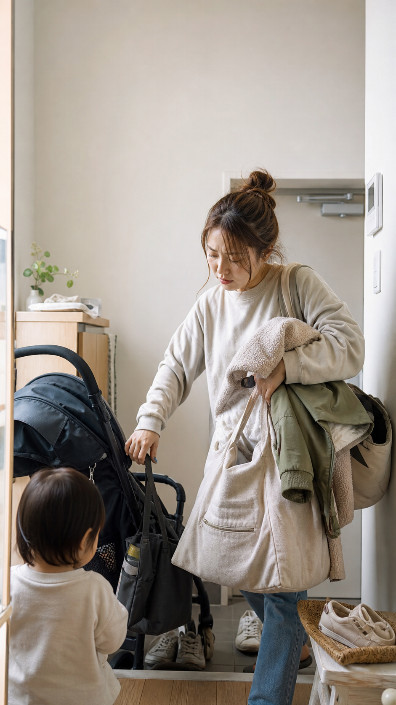

Morning Outing
出発まであと5分。なぜ今ぜんぶ来る。
鼻水、靴下、水筒、バッグ、上着、ベビーカー。子育ての朝は、ちょっとしたことが一気に重なります。気合いで乗り切るより、詰まりやすい場所を先に見つけて、少しだけ減らしていくほうが現実的です。
子育て 朝 バタバタ保育園 朝 支度子連れ おでかけ 準備鼻水 出発前

まず結論。朝の支度は「迷う場所」を減らす
朝の支度は、やることが多いというより、判断が多いのがしんどいです。何を持つか、どこに置いたか、鼻水をどうするか、車に乗せる順番はどうするか。毎朝考えるものを減らすだけで、少しラクになります。
出発前に詰まりやすい3つの場所
01 GOODS
持ち物
水筒、着替え、袋、保湿、予備のおむつ。必要なものほど、朝に探すと時間を持っていかれます。
02 CARE
直前ケア
鼻水、口まわり、着替え直し。出る直前に起きるケアは、置き場所と手順を固定すると動きやすいです。
03 ROUTE
玄関・車
靴、バッグ、ベビーカー、チャイルドシート。家の動線に合わないものは、毎朝の小さな負担になります。
今日からできる小さな対策
- 水筒・袋・着替えを同じ場所にまとめる
- 鼻水ケアや保湿は玄関近くにも置き場所を作る
- バッグを前日に閉じるところまでやる
- 靴下は予備を玄関に1組だけ置く
- 車やベビーカーに入れる順番を固定する
悩み別入口
よくある疑問
朝の支度は前日に全部やるべき？
できる日は助かりますが、毎日完璧にするのは難しいです。バッグを閉じる、水筒の場所を決める、予備の靴下だけ置くなど、戻しやすい仕組みにするほうが続きやすいです。
鼻水で出発が止まる時はどう考える？
鼻水ケア用品を探す時間を減らすだけでもラクになります。症状が強い、長引く、つらそうな時は自己判断しすぎず、小児科などで相談してください。